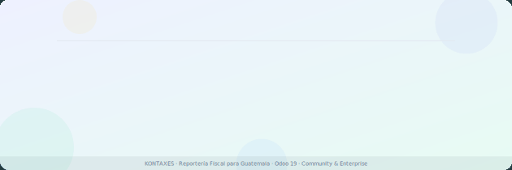

El módulo está en fase de pruebas. Próximamente recibirá actualizaciones con nuevas funcionalidades.
Una sola compra — uso permanente en tu instancia.
Genera los Libros de Compras, Ventas, Diario y Mayor en el formato exacto que exige la SAT en PDF y Excel, y prepara tu Declaración Sombra (IVA, ISR e ISO) antes de ingresar al portal SAT — todo directamente desde la contabilidad de Odoo 19, sin exportar ni reelaborar datos.
Asigna la categoría SAT GT (Gravado/Exento, IVA, ISR, Combustible…) una sola vez a cada impuesto de Odoo.
Selecciona el régimen IVA e ISR y vincula las cuentas contables para retenciones, remanentes e ISR.
Elige el libro o declaración, selecciona el período y descarga en PDF o Excel. El sistema clasifica automáticamente.
Formato exacto SAT GT con columnas Local/Importación × Gravada/Exenta × Bienes/Servicios, IVA, folio configurable, resumen final y certificación del contador.
Mismo formato para ventas con columnas Local/Exportación, NIT del cliente, número DTE, notas de crédito/débito con signo correcto y totales automáticos.
Libro combinado (compras + ventas en una sola hoja horizontal) para el régimen de Pequeño Contribuyente. Se activa automáticamente según el régimen configurado.
Libro Diario contable en formato SAT GT con partidas numeradas, debe/haber, totales acumulados por página y certificación del perito contador.
Libro Mayor por cuenta contable con saldo acumulado, debe/haber, apertura y certificación. Exportación a Excel incluida.
Simula los formularios SAT antes de ingresarlos: IVA General (D-1), IVA Pequeño Contribuyente, ISR Mensual, Trimestral y Anual (Opcional y Utilidades), ISO Trimestral.
Configura una sola vez la categoría SAT de cada impuesto Odoo (Gravado/Exento/IVA/ISR/Combustible…). El sistema clasifica automáticamente todas las facturas.
Capturas reales del módulo funcionando sobre la contabilidad de Odoo 19.
Community y Enterprise
Solo Contabilidad nativa de Odoo. Compatible con los demás módulos KTX.
Grupos SAT Usuario y Administrador
Versión Beta — incluye todas las funcionalidades actuales y todas las actualizaciones del módulo.
Una sola compra, uso permanente en tu instancia de Odoo.
Libros SAT en PDF y Excel · Declaración Sombra — todo en un módulo, sin salir de tu contabilidad.
Hecho por contadores guatemaltecos, para contadores guatemaltecos.
Reportería Fiscal SAT GT — por KONTAXES
Odoo 19 • Community & Enterprise • Exclusivo para Guatemala • info@kontaxes.com • app.kontaxes.com
¿Tienes sugerencias? Escríbenos — tu retroalimentación hace crecer el módulo.